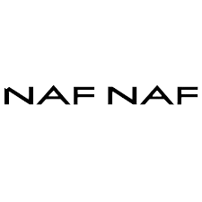
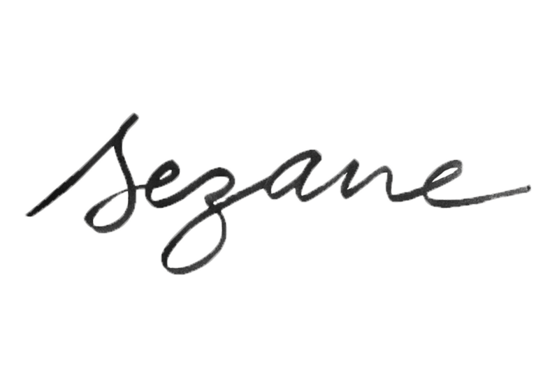

Hello, I am Juliette BEC, I am 22 years old and I am in my final year of the Global BBA program at ESSEC Business School. You are currently viewing my online CV, which I created myself thanks to the Web Development course!
Mon profil LinkedInI completed a literary baccalaureate at Lycée Saint Thomas d'Aquin located in the 7th arrondissement of Paris, which I obtained in 2020. I then pursued the Global BBA program at ESSEC Business School, which I will complete in December 2024. I also had the chance to go abroad and study for a semester in Amsterdam, where I followed the minor "Leadership, Management and Change".
Let's start with the observation internships I did during middle school and high school. I had the opportunity to spend two weeks with the director of collections at the French brand NafNaf when I was in 9th grade. I repeated this experience in 10th grade with a second one-week internship with the same person, Mrs. Caroline Pimienta. I also did a short one-week discovery internship at a law firm.
Later, during my first year at business school, I worked at Chanel as a sales advisor in the Perfume-Beauty section at their Galeries Lafayette Haussmann stand for three months (June, July, August 2021). I learned how to advise customers according to their needs and suggest complementary products, build customer loyalty, and potentially register them in the Chanel or Galeries Lafayette address book. I also managed the cleanliness and organization of the counter, tracked inventory, and reordered products. The multicultural and international environment, both within the team and among the clients I met, was extremely enriching.
Starting from my second year of higher education, I chose to take a part-time job alongside my classes to gain more professional experience (and to earn some money, let's be honest, being a student isn't easy!). I worked as a versatile crew member at McDonald's, in the drive-thru restaurant in Cergy-Pontoise, which is one of the best in France. Being placed "in the front," meaning not in the kitchen, I was responsible for taking and preparing orders for dine-in, take-out, drive-thru, and delivery, managing inventory, building customer loyalty, and maintaining the restaurant lobby. This experience lasted 7 months and allowed me to get my first insight into the fast-food industry and understand its challenges.
During my final year of the Global BBA, I completed a 6-month internship at one of the largest French ready-to-wear brands: Sézane (I suppose this company might be more familiar to women than to men ...). I held the position of Customer Experience Project Manager, under the direction of Mrs. Cécile de Choulot, BI Project Manager. This internship was extremely educational, particularly due to the diversity of tasks I was able to explore: sending weekly reports to various teams, independently managing the FAQ for the brand's two websites (Sézane and Octobre) in 7 different languages, revamping email receipt acknowledgments, continuously improving processes and tools related to customer service, and overseeing various projects. Working within this company was especially interesting because it is a DNVB that has grown, established a strong identity, expanded internationally in a significant way, and today dresses millions of people. I am very proud to have been part of this adventure!
Currently, I work as a receptionist and sales associate at SPace Cycle, a boutique gym under The Sanctuary group, high-end fitness studios offering group classes. I primarily work in a studio that offers Pilates, yoga, barre classes (Poses), and indoor cycling (Space). My responsibilities include welcoming clients, showing them around if needed, assisting them with setup at the beginning of classes, restocking and cleaning the locker rooms between classes to ensure a consistent and pleasant experience for all clients. Inventory management is also part of my duties. Finally, promoting and selling class packages is a regular part of my job.
I am dynamic, curious, and creative. I enjoy managing projects and continuously improving anything that can be enhanced. I am proficient in using Google Suite, Microsoft Office, and tools such as Canva (for design), Zendesk (for ticketing), DidUEnjoy (for sending satisfaction surveys), SmartTribune (for managing FAQs), Mayday (for internal knowledge base), SAP basics, and BSport (an online booking tool in the sports sector).